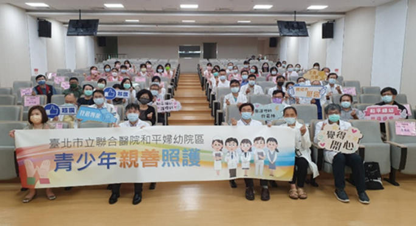

09
青少年親善
Youth-Friendly Care
青少年的健康，從一個不被打擾、不被論斷的空間開始。

24
09
Teen's 幸福 9 號 走過十七年的青少年親善
97 年開辦・108 年通過認證・114 年榮獲典範獎與創意特色獎
Seventeen Years of Adolescent-Friendly Care
本院自民國 97 年起承接「Teen's 幸福 9 號」青少親善門診，深耕青少年健康促進。
婦幼院區是全國第一批通過「青少年親善照護機構」認證試評的機構之一；108 年正式取得認證、114 年再度榮獲衛福部「青少年健康促進服務友善機構」典範獎與創意特色獎雙料肯定。
我們的服務從不被動等待青少年走進來，而是主動觸發、全面覆蓋──電子病歷系統內建提示與評估工具、隱私就診空間、跨團隊照護常規、醫病共享決策（SDM），以及讓青少年參與服務規劃的回饋機制。
Adolescent care that doesn't wait — proactive triggers, private spaces, shared decisions, and youth voice in design.
★
未成年懷孕親善處遇
婦產、心理、社工跨團隊陪伴，重視保密與選擇權
★
兒少保護一站式驗傷
家暴性侵案件友善處理，減少二次傷害
★
青少年校園篩檢計畫
與校園衛生站合作的全國少見模式
★
醫病共享決策 SDM
青少年是決策的主體，不是被告知的對象
★
青少年志工培育
CPR + AED 訓練、HPV 校園宣講、網路成癮防治、衛教外展
★
推動委員會跨團隊運作
副院長領軍，含家醫、青少年科、心理、社工、營養、護理
「青少年要的不是更多大人的意見，而是一個被尊重、被傾聽的空間。」
25